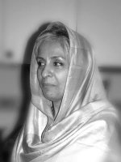

پذيرش > تریبون > مقالات > در ستایش یک امضاء از یک میلیون امضاء


 در ستایش یک امضاء از یک میلیون امضاء در ستایش یک امضاء از یک میلیون امضاء
5 شهریور 1389 - ناهید میرحاج - نسخه قابل چاپ
تغییر برای برابری / مجموعه ی کمپین از نگاهی دیگر : اگر قرار باشد، در ستایش زندگی چیزی بگویم، دوست دارم، فقط بگویم زندگی ستایش انگیزترین چیزی است که تاکنون دیده ام. روییدن و بالیدن، سرشار از نیروی ساختن. زندگی این است. اما نه آن زندگی روزمره که همه ما را به دام خود فرا می خواند. که نه روییدنی در آن است و نه بالیدنی. اگر قرار باشد زندگی همه ما آدمها را جمع کنند، بیشترمان چنان درگیر خوردن و خوابیدن شده ایم که روییدن و بالیدن از زندگیمان حذف شده است. گروه بزرگی از ما خیلی زود فراموش می کنیم، جوهر زندگی چیزی نیست که نام آن را عادتهای روزانه گذاشته ایم. عادتهایی که زندگی مان را می بلعد. این بلعیدن هم روش و شیوه ای دارد. ما را موجوداتی می کند، دچار روزمرگی. اندک بین و محافظه کار. روزهایمان معمولاً خیلی معمولی شروع می شود. از این روزها در روزشمار عمر همه ما زنان و مردان زیاد وجود دارد. هر صبح که چشم باز می کنیم، روزمان را با کارهایی که بیشتر گونه ای وظیفه یا اجبار است، پیش می بریم. ممکن است خوش شانس باشیم و روز خوبی داشته باشیم، خوش شانسی هایمان هم از جنس چیزهای معمولی است. خریدن لباس و وسایل آشپزخانه، ماشین، دعوت به عروسی، گرفتن ویزا، و سر کردن در زندگی قوم و خویش و همسایه و هزار جور از این چیزها. اگر بد شانس باشیم، روزمان ممکن است با بدشانسی تمام شود. کسر آوردن پول برای اجاره خانه، تصادف ماشینی که سوار هستیم، باخبر شدن از چک بی محلی که روزهایمان را در دادگاهها می سوزاند، سوختن ماشین لباسشویی یا یخچال و از این قبیل، چاق شدن بیش از اندازه و دپرسیون بعد از آن یا دعوا با خویشان و دوستان و البته چیزهایی خوبتر یا بدتر ازاین که در زندگی همه ما وجود دارد.
جنس خوش یا بدشانسی های ما زنان در زندگی عادی و روزمره هم اگرچه تا حدودی متفاوت است، اما بازهم نمی توان آن را از زندگی معمولی و عادی مردان چندان جدا دانست. شادی کردن برای گرفتن یک هدیه از جنس زر و عطریات، دعوا و بگو مگو بر سر چیزهای پیش پاافتاده. یا چیزهایی که جدیتر هستند.گاهی خودم را جای زنانی می گذارم که دریکی ازاین روزهای معمولی قرار است به دادگاه خانواده بروند و شکایت کنند، دادخواست طلاق بدهند، چقدر در دلشان دلهره است. چقدر پیش از اینکه پایشان به دادگاه برسد، آب دهانشان را قورت می دهند ومی نالند. از قوانینی که ناعادلانه نوشته شده اند و به زن به عنوان موجودی از جنس دوم نگاه می کنند. یا ممکن است یکی از روزهایی باشد که چشم زن به در خشکیده است. شوهرش رفته است و بدون خرجی او و بچه هایش را گذاشته است. زن در اضطراب و پریشانی به فکر سفره خالی است و به فکر روزهایی که می آیند و او نه خرج خانه دارد و نه پولی برای پرداختن اجاره خانه. مردهایی کمین کرده اند که سلامت زندگی او را به یغما ببرند. و او این را حس می کند. و بهتر از همه حس می کند که قوانین حمایتی برای او وجود ندارند یا ناکافی هستند. ممکن است آن روز فقط غم نباشد، شادی و عروسی هم باشد. روز گرفتن هدیه و دیدار یک دوست خوب باشد. همه اینها باهم تنیده شده اند.
اما نمی دانم چرا شادیها و روزهای خوب در زندگی ما چنین گذرا هستند و غمها ماندنی و پایدار. شاید این ذات زندگی روزمره در سرزمینی باشد که هیچ چیزی سرجای خودش نیست. با این همه اگر یک بار دیگر به زندگی خودمان نگاه کنیم، خواهیم دید که بعضی روزها در زندگی ما هستند که نه رنگ غم دارند و نه رنگ شادی. این روزها خیلی خاص هستند. روزهایی که جنسشان با روزهای معمولی فرق دارد. روزهایی که وقتی آغازشان می کنیم، حسی گنگ و غریب با ما هست. روزهایی که ممکن است کمی رنگ ترس در آن ببینیم، اما ترس نیست، هیجان دیگری است. هیجان دیگر بودن. یعنی از زندگی معمولی فاصله گرفتن. در این روزها احساس می کنیم که طور دیگری هستیم ، به دنیا آمده ایم که طور دیگری باشیم و نه آن طور که پدر و مادرها بوده اند. و ما برای این که این روز خاص را بسازیم، می دانیم که باید هزینه بدهیم. شاید به این سبب که دیگر زندگی معمولی توقعات ما را برآورده نمی کند. شاید برای این که می خواهیم چیزی بسازیم که در ستایش زندگی باشد. زیرا زندگی ارزش آن را دارد که در ستایش آن هرکاری کنیم و هر بهایی بپردازیم.
روزی که ساختیم
اگر قرار باشد ما زنان ایرانی، از روزهای خاص در زندگیمان بگوییم. کدام یک برجسته تر به نظر می رسد؟ برای ما روزهای خاصی وجود دارند که همواره در ذهنمان مانده اند. اما شاید در هیچکدام از آنها خودمان به عنوان نیرویی نقش آفرین حضور نداشته ایم. آن هم نقش آفرینی ایی که اکنون کم کم مشخص می شود که تاریخ ساز است. سخن از یک روز خاص در زندگی بعضی از زنان است که راه و جهت اصلی زندگیمان را تغییر داده است.
سال 1385 برای بیشتر مردم، با خود یاس و سرخوردگی آورده بود. این را می شد در خیابان ها و معبرها و خانه ها دید و حس کرد. آن همه تلاش برای رسیدن به زندگی انسانی تر و جامعه ای آزادتر ظاهراً نافرجام مانده بود. مثل صدها کوشش دیگر در این صد ساله. بسیاری از فعالان مدنی مایوس و سردرگریبان گذاشته بودند. اما برای برخی از زنان جامعه ما وضع فرق می کرد. تجربه کار در این سالها به ما آموخته بود که دست از شعارها و هدفهای کلان برداریم و به کارهای کوچکتر بپردازیم. این کارهای کوچکتر هم ما را به خودمان بیشتر می شناساند و هم می توانستیم امیدوار باشیم که هدفهای کوچک عملی تر هستند. ما دیگر آموخته بودیم هدفهای کلان در این جامعه به مقصد نمی رسد، مگر اینکه هدفهای جزییتر به مقصد رسیده باشند. این تجربه کمی نبود و ما گروه معدود زنان که گاه و بیگاه به مناسبتهای گوناگون دورهم جمع می شدیم، کم کم در گفتگوهایی که داشتیم راهها و راهکارهایی را پیشنهاد می دادیم که جهت آینده از آن هویدا می شد.
اگر بخواهیم، از روز پنجم شهریور سال 85بگوییم که روز خاصی در زندگی ما زنان ایرانی است، باید کمی به عقب برگردیم و یادی کنیم از خرداد همان سال. روزهای آخر بهار بود و گرمای شهر آلوده تهران شروع شده بود. ما گروه زنان تصمیم گرفته بودیم که خیابان را از آن حالت زندگی روزمره که چیزی برای ستایش ندارد، نجات دهیم. پس هماهنگ شدیم و روز 22 خرداد رفتیم که در میدان هفت تیر خودی نشان دهیم. خودمان را در میان نیروهایی که میدان را به محاصره درآورده بودند نشان دادیم. خورشید با همه گرمی اش به زمین می تابید. در روزی که ما اراده کرده بودیم تا زندگی معمولی را ادامه ندهیم، و کار کوچکی برخلاف عادت کرده باشیم، هیجان داشتیم، به خیابان رفتیم، گرمای بعدازظهر تهران را به جان خریدیم. ترس و حضور خیابانی. آنها نگذاشتند، دور هم جمع شویم .غروب که به خانه برمی گشتیم بسیاری از ما دستگیر شده بودند. آیا شکست خورده بودیم، آیا عقب نشسته بودیم؟ در حالی که خودمان خوب می دانستیم، نمی خواستیم کار بزرگی بکنیم در حد جابجا کردن جهان و کره زمین. تنها می خواستیم بگوییم می خواهیم قوانین تبعیض آمیزی که در این مملکت بر زنان حاکم است، تغییر دهیم. این کار بزرگی نبود.
شب که می خواستیم در بستر فرو رویم، با هم گفتیم زندگی ارزشش را دارد که گاهی برای ستایش آن هزینه اش را بپردازی. در این میان البته گروهی ما را دست می انداختند که از کارهای بزرگ سر برکارهای کوچک فروآورده ایم. بله آورده بودیم و می خواستیم این کار را تجربه کنیم. چند زمانی دیگر لازم بود که به دور از شعارها و هیجان ها کار کنیم ، بحث کنیم و از میان بحثها راهکارهای جدید و بکر پیدا کنیم. ما در 22 خرداد توانسته بودیم خودمان را در فضای خیابان که برای خودش رسانه ای در دنیای مدرن بود به اثبات برسانیم. اما چند ماه دیگر لازم بود که باز یک روز خاص در تحول جنبش زنان بسازیم. روزی که پس از آن ، ستایشش کنیم و با غرور از آن حرف بزنیم.
شهریور از راه رسیده بود. روزها یکی یکی می آمد و می گذشت. ما برنامه ای در سرداشتیم. برای آن از مدتها پیش برنامه ریخته بودیم. در گروههای کوچک و بزرگتر جمع می شدیم و می خواستیم روش تازه ای را در بیان مطالبات زنان مطرح کنیم. روز پنجم شهریور، آن روز موعود بود. روزی که خاص شروع شد. یعنی قرار بود که خاص باشد و ما آن را خاص کردیم. از چند روز قبلش دنبال گرفتن یک سالن بودیم که بتوانیم حدود دویست نفر را پذیرایی کنیم و از اهدافمان سخن بگوییم. اما هر نهاد و سازمانی تا می فهمید که می خواهیم برای چه هدفی دور هم جمع شویم عقب می کشید. بهانه ها برای این که روز خاص ما را خراب کنند همیشه در این سرزمین زیاد پیدا می شود. هرکسی بهانه ای دارد. یکی از عواقب کار می ترسد، یکی از دست دادن شغلش را بهانه می کند. دیگری می گوید که خانه شان تحت نظر است و خیلی بهانه های دیگر که شاید بحق هم باشد. اما تو و آن دوستانی که همراهشان هستی ، باید هر طور شده آن روز خاص را بسازید. بالاخره یک تالار به ما این فرصت را می دهد روز خاصی را که قرار است بسازیم در آنجا برگزار کنیم. دل همه مان مثل سیر و سرکه می جوشد. هم نگران هستیم، همه هیجانی فراتر از نگرانی داریم. هیجانی که از ایستادگی مان برمی خیزد. ما داریم یک روز خاص را می سازیم که ممکن است در تاریخ بماند و ممکن است هم مانند روزهای دیگر فراموش شود.
هنگامی که آماده شده ایم دور هم گرد بیاییم، متوجه می شویم از خودمان یک سوال را نپرسیده ایم. آیا ما زنان همفکر و هم سنخ هستیم؟ حقیقت این است آن روز گروه زنان و دخترانی که خواستند، روز متفاوتی در تاریخ جنبش زنان سرزمین ما بسازند، خیلی با هم همفکر و هم سنخ نبودند. وقتی که قرار شد دور هم جمع شویم پیش از این که به گردهم بیایم، از یکدیگر نپرسیدیم، تو مانند من فکر می کنی یانه ، اگر فکر می کنی پس بیا کنار من. ما دور هم جمع شدیم، برای بیان یک مطالبه، برای آشنایی جامعه با تبعیضهایی که فشاری مضاعف روی گرده زنان بوده و هست. در میان ما، چند نسل از زنان دیده می شد. حضور این چند نسل به ما بیشتر امید می داد که از مسن تر ها تا جوانترها همه مطالباتی مشترک داریم. در نهایت آن روز را زنان و دخترانی باید می ساختند، که می خواستند با همه تفاوتهای فکری و فرهنگی که باهم داشتند، در کنار هم کاری را شروع کنند که پیش از این تجربه اش را نداشتند.
آن روز ماه پایانی تابستان که گاهی در تهران نسیمی از روی کوهها بلند می شود و بوی پاییز را با خود می آورد، ما زنان راه افتادیم که دور هم جمع شویم، اما هنگامی که به نزدیک تالار رسیدیم، درها را بسته دیدیم. خواستیم ناامید شویم و به خانه برگردیم و شب هم حرفی نداشته باشیم در ستایش زندگی. اما ما زنان عادت کرده ایم که در سختترین موقعیتها ناامید نشویم. زندگی این را به ما آموخته است. همان بخشی که ستایش انگیز است. پس خیابان و حضور آدمها را غنیمت شمردیم و « کمپین یک میلیون امضاء » را فریاد زدیم. دفترچه ها و بیانیه را که آماده کرده بودیم. بین خودمان و مردم پخش کردیم. و خود اولین امضاء کنندگان بیانیه ای شدیم که با تدبیر ساخته بودیمش.
آن شب که به خانه باز گشتیم، هرکدام یک امضاء بودیم از دویست امضاء. و ما دویست امضاء باید کمپین یک میلیون امضاء را آغاز می کردیم. ما یک یک این امضاها، آن روز غیر معمولی را ساخته بودیم. اما هنوز بسیار زود بود که بدانیم چه کار بزرگی انجام داده ایم. آن روزهنوز نمی دانستیم در تاریخ جنبش زنان چگونه از این روز یاد می شود. روزی که سبک و شیوه ای از مبارزه مدنی در جامعه ایران پایه گذاشته شد که به آن گفته می شود، مبارزه مدنی برای مطالبات محدود از راه چهره به چهره، گردآوری امضاء و تجربه هایی که ما پیش از این نداشته ایم. به همین سادگی و به همین کوچکی. در این روز ما زنان احساس کردیم با هر امضاء یک هویت خاص هستیم که خودمان را به چرخ ناسازگار قوانین مدنی می آویزیم، تا آن را از حرکت نادرست بازداریم و از نو بسازیم.
از آن روز کمپین به زندگی و جنبش مدنی ما زنان ایرانی حال و هوایی خاص داده است. ما از کمپین آموخته ایم و کمپین در رگهای جامعه جاری شده است. روزها، ماهها و سالهای سختی را پشت سرگذاشته ایم. این روزها و ماههای سخت بالاخره به بعداز 22 خرداد 88 رسید. حضور سرشار زنان در صف اول مبارزه مدنی ، رنگ و بویی دیگر به جامعه ما داد. این حضور تصادفی به دست نیامده بود.
اکنون چهار سال از آن روز می گذرد. در این سالها اتفاقات زیادی در سرزمین ما افتاده است. بازهم خرداد داغ تهران در سال 88 و حوادث بعد از آن زندگی همه ما را به جنبشی بزرگتر و فراگیرتر کشانده است. روزهایی که در آن انبوهی از ستایش زندگی بود و سپس زخم ، درد و مرگ و از دست دادن بسیاری از جوانهای این سرزمین. مرگ نداها و سهراب ها. و در کنار آن مقاومت بود و روزهای ستایش انگیز دیگری در تاریخ سرزمین ما برای رسیدن به زندگی عادلانه و آزادانه درچارچوب اعلامیه جهانی حقوق بشر. در این میان جنبش زنان بیش از هر جنبش و نیرویی از خود مایه گذاشت. این انرژی را نیز ما از زندگی گرفته بودیم. ما زنان و مردان برابرخواه برای ساختن این روزهای ستایش انگیز هزینه های بسیاری داده ایم و همچنان می دهیم. ما برای فرزندانمان که از دست دادیم گریستیم. برای آنها که در بند بوده و هستند، نگران ماندیم. و از کسانی که همیشه حس و نگاهشان با ما بود، از عالیه که همچنان در بند است و این روزها دلمان با اوست، از شیوا دختر زیباروی و مقاوم جنبش زنان و حقوق بشر که در همه این سالها همراهی پیگیر بوده است. از بهاره که صبوری اش به همه ما بسیار چیزها آموخته است. از ژیلا که این روزها نگاهش را به میله های سرد می دوزد که مردان و زنان این سرزمین را در بند گرفته است و بسیاری زنان دیگر. پس در ستایش زندگی می گوییم: ستاره هایی در بند داریم از آسمان یک میلیون امضاء.
ارسال به
بالاترین
،
توییتر
،
فریندفید
،
فیسبوک
در همين بخش :
 دهمین دورۀ مراسم تندیس صدیقه دولت آبادی ۱۳۹۲ دهمین دورۀ مراسم تندیس صدیقه دولت آبادی ۱۳۹۲
کارت پستالهایی به بهانهی هشت مارس و به یاد همهی مبارزین راه برابری
بیانیه بیش از 350 تن از مدافعان حقوق زنان به مناسبت روز جهانی زن؛ زنان هر روز فرودستتر میشوند
لباسی که برای تن ما دوخته اند! /اعظم بهرامی
چالشها و چشمانداز فعالیت مدنی زنان
ديگر بخش ها :
طرح یک میلیون امضا
|
مقالات
|
سایت نوشته ها
|
اخبار
|
گزارش كمپين
|
گفت و گو
|
علیه سکوت
|
كوچه به كوچه
|
نامه های شما
|
گزارش ویژه
|
گفتگو با اعضا
|
ویژه سالگرد کمپین
|
تصویر برابری
|
دل آرام علی
|
تریبون
|
مقالات
|
تاریخ شفاهی
|
خارج از چارچوب
|
کتابخانه
|
درباره کمپین
|
کمپین در شهرها
|
کمپین در بند
|
صدای تغییر
|
ویژه 22 خرداد
|
لایحه حمایت از خانواده
|
گالری
|
عشا مومنی
|
امیر یعقوبعلی
|
خدیجه مقدم
|
راحله عسگری زاده و نسیم خسروی
|
پروین اردلان،جلوه جواهری، مریم حسین خواه، ناهید کشاورز
|
زینب پیغمبرزاده
|
سعیده امین، سارا ایمانیان، محبوبه حسین زاده، ناهید کشاورز و همایون نامی
|
احترام شادفر
|
نسیم سرابندی زاده،فاطمه دهدشتی
|
وبلاگ مهمان
|
پرونده خرم آباد
|
دستگیری ها
|
مریم مالک
|
پرستو اللهیاری
|
مهرنوش اعتمادی
|
سمیه رشیدی
|
Other Languages
|
همراهان
|
«فراخوان کمپین ده روز با بهاره هدایت»
| English
|